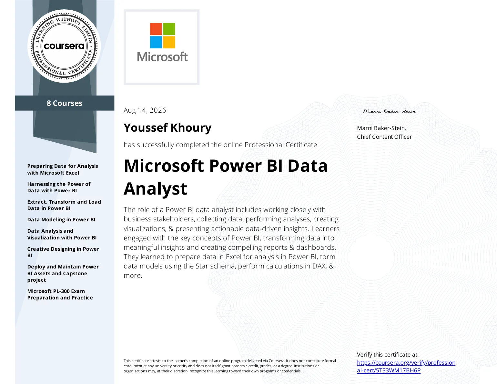

Youssef Khoury — Data & Operations Analyst
I find the risk hiding in your operations before it costs you.
Power BI, SQL and Excel work that makes risk visible and names the next action.
Power BI · SQL Server · Excel · Power Query · DAX · Business Central · Xero
Power BI, SQL Server, DAX, Power Query, Excel, star schema and data modeling, KPI governance, requirements, process mapping, UAT, RAID logs, Business Central, Xero, dashboards, and AI-assisted workflows.
Selected work
2026Four self-directed analytics projects, built end-to-end on synthetic data modeled on real order-to-delivery operations. Each ships a case-study PDF and its working file.
420-order model, data dictionary, star schema, 8 governed KPIs and a live interactive dashboard.
Output delivery-risk, supplier and overdue-cash exposure in one weekly view — every figure traceable to source.
360 invoices turned into aging, a DSO proxy, promise coverage and a cash-priority queue.
Output a ranked list of which invoices to chase first, by expected cash and customer risk.
300 purchase orders scored for spend, OTIF, fill rate, price variance, defects and supplier risk.
Output every supplier sorted into a risk tier, with the drivers behind each score.
24 requirements with acceptance criteria, traceability, 30 UAT cases and readiness reporting.
Output 24 requirements as tested, signed-off, fully traceable delivery evidence.
Dossier index
One governed view of value, delivery risk, supplier performance and overdue cash.
The 420-order model carries a data dictionary, a SQL star schema, reusable DAX measures, eight KPIs, an Excel control tower and BA artifacts — feeding one interactive dashboard.
Dataset is synthetic. Model, analysis and deliverables are original work.
Credentials
Verified
Power BI Data Analyst — Professional Certificate
Data preparation, modeling, visualization, analysis and dashboard delivery.
View PDF ↗Business Analyst — Professional Certificate
Requirements, process modeling, stakeholder collaboration and solution evaluation.
View PDF ↗BBA — Management Information Systems · Matn University College · 2020–2024
Experience
2023 — NowOperations & Projects Lead Alta Light
Cut end-to-end order-to-delivery lead time from 2–3 months to about 2 weeks by mapping the process, tracing recurring delays to three root causes and rebuilding supplier follow-up; management adopted 3 of 5 recommendations. Run 40+ concurrent orders and projects worth $1M+ across 20+ suppliers, and built the Excel dashboard used for weekly operations reviews.
Operations Associate Alta Light
Coordinated day-to-day order-to-delivery execution across suppliers, purchasing and delivery follow-up — the operational grounding that led to the Lead role.
Administrator UPM
Maintained the Excel tracker for ~30 client accounts, reported delivery and receivables status, reconciled records against invoices and payments, owned daily client follow-up.
Financial Consultant SNA
Supported client needs assessments, underwriting submissions, policy documentation, claims, renewals and audit-ready client files.
Project Coordinator Facilitate International
Coordinated 500+ construction, maintenance and residential service requests for US and Canada clients — progress, quality, issues and updates.
Ask me about any of it.
Every number above came from work I actually did — I’m happy to walk through how it was built.